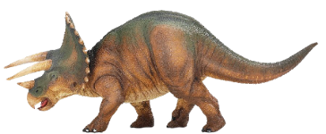

<section>
    <article>
        <header>
            <h2 class="dinossauroTitulo">Triceratops</h2>
        </header>
        
        <div class="dinossauroDescricao">
            <p>
            O tricerátopo (Triceratops horridus, do latim "cabeça com três chifres") foi um tipo de dinossauro herbívoro e quadrúpede que viveu no fim do período Cretáceo, durante o Maastrichtiano, principalmente na região que é hoje a América do Norte. É um dos últimos gêneros conhecidos de dinossauros não-aviários, e extinguiu-se no evento de extinção do Cretáceo-Paleogeno a 66 milhões de anos atrás.[1] O termo Tricerátopo, que significa literalmente "cabeça com três chifres", é derivado do grego τρί - (tri-), que significa "três", κέρας (Keras) que significa "chifre", e ὤψ (ops) que significa "cabeça".[2][3]
            </p>
        </div>
    </article>
</section>
